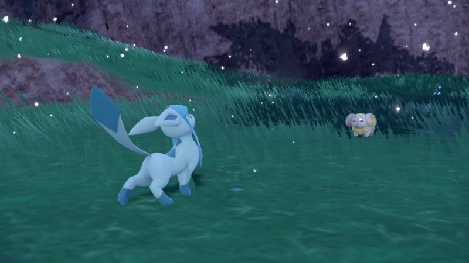
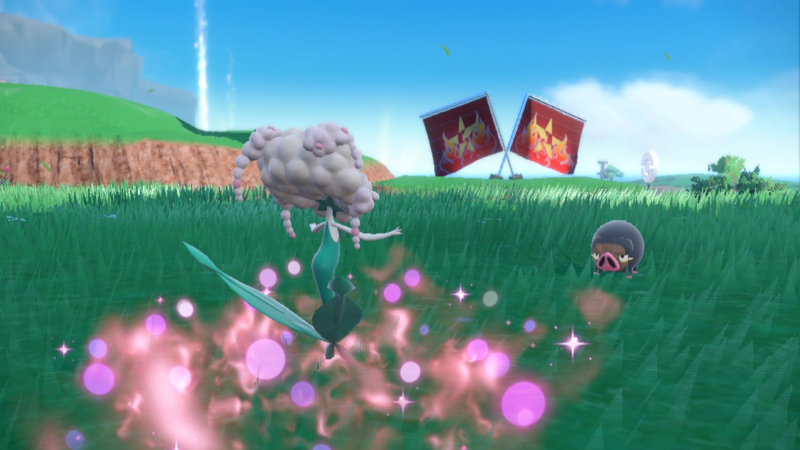
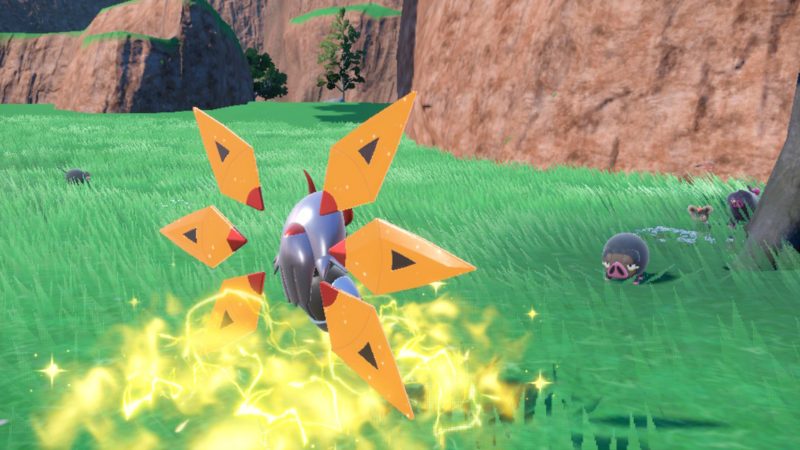

Характеристики:
Ivs - Скрытая характеристика, считается аналогом днк покемонов, ivs применяется ко всем характеристиком и может достигать значения от 0 до 31, каждое значение Ivs конвертируется в характеристику к которой относится(31 Ivs в атаке даст вам 31 атаки). Evs - Скрытая характеристика, отвечает за усиление характеристик вашего покемона вне значения его уровня. Любой покемон может иметь максимум 510 evs, любая характеристика может иметь максимум 252 Evs. Характер - Каждый покемон имеет характер, любой характер понижает одну характеристику покемона на 20% и повышает характеристику на 20%, если характер покашывает и понижает одну характеристику, такой характер считается нейтральным, не повышая и не понижая вашу характеристику.
.png)

Движения:
Все движения делятся на три категории: физические, специальные и статусные. Движения физического типа наносят физический урон, используя характеристику атаки вашего покемона и снижается защитой вражеского покемона. Движения специального типа наносят специальный урон, используя характеристику спец атаки вашего покемона и снижается спец защитой вражеского покемона Движения статусы имееют разнообразные свойства, зависимые от самого движения, они могут изменить статус вражеского покемона, увеличить/уменьшить характеристики вашего/вражеского покемона, сделать вас неуязвимым на один ход, изменить условия поля боя или же ничего не сделать Каждое движение имеет приоритет, приоритет стоит выше чем характеристика скорости покемона(если покемон врага использует движение с +1 приоритетом, а вы с 0 приоритетом, то он походит первым внезависимости от скорости обоих покемона). Приоритет бывает положительный так и отрицательный достигая значения от +5 до -7 Сила движения определяет количество урона которое нанесет данное движение, чем больше сила движение, тем больше будет урон нанесеный покемону соперника Точность движения, определяет в процентах шанс попадания по вражескому покемону Эффект, каждое движение может обладать каким либо эффектом, например наложение статуса на вражеского покемона с каким либо шансом, увеличение/уменьшение характеристик покемона. Любой из параметров движения: тип, приоритет, сила, точность и эффект, могут быть изменены некоторые способностями или предметами. Способности: Каждый покемон имеет до 2 обычных и 1 скрытой спобность. Способность обладает разнообразными эффектами: усиление силы движения, изменения типа движения, получение имунитета, повышения характеристик покемона. Существует также скрытая способность, её основное отличие что в играх она иногда может появится у покемона. Спобность покемона может быть изменена некоторые эффектами приемов или же гиммиками.
Типы:
Каждый покемон обладат до 2 из 18 типов, боевая система строится на взаимодействиях типов покемонов. На примере призрачного типа, атака призрачного типа нанесет покемону с психическим типом в два раза больше урона, это обозначается как суперэффективная атака. Атака призрачного типа нанесет покемону темного типа в два раза меньше урона, это обозначается неэффективная атака. Атака призрачного типа не имеет супер/не эффективностей против боевого типа, а значит не получит бонус или штраф к урону. Атака призрачного типа нанесет нормальному типу нулевой урон, это называется имунитет. Некоторые комбинации типов покемонов могут иметь четверную слабость к некоторым типам, например лед/трава имеет 4 слабость к огненому типу существует также подобный аналог резиста, например стальной/водный покемон получит от атаки водного типа лишь 0.25х урона. Существует также понятие STAB, стаб применяется к атакам покемона того же типа, усиливая данные движения в 1.5 раза Предметы: Каждый покемон может удерживать 1 предмет, предметы могут быть выбраны до начала сражения. Предметы дают разнообразные бонусы, например лечение каждый ход, усиление характеристик или же игнорирование ловушек.

Гиммики:
Начиная с 6 поколения в игру вводится центральная гиммик механика, всего их 4 штуки: мега эволюция, Z-атаки, динномакс(гигантомакс) и терастализация.Мега эволюция, некоторые покемоны удерживая уникальный для данного вида покемона мега камень, могут один раз за битву изменить свою форму став мега-покемоном, мега форма дает значительное повышение характеристик, может изменить способность покемона, его тип. Z-атака, представляет из себя предмет, именуемый Z-кристалом существуют 18 Z-кристалов, для каждого типа покемона. Один раз за битву, можно изменить 1 свой прием нужного типа, на Z-атаку, Z-атаки изменяют свой тип урона взависимости от типа урона атаки, сила Z-атаки зависит от базовой силы приема на которую была применена Z-атака, Z-атаки не может промахнутся. Существуют также именные Z-атаки доступные только определеным покемонам, чаще всего имея какой либо уникальный эффект(например статус паралича) Диномакс, представляет из себя уникальный статус для покемона. Можно применить один раз за битву, на три хода выбраный покемон многократно увеличиватся в размерах, повышая свое значение здоровья в два раза, а также изменения свои атаки на max варианты. ила max атаки зависит от базовой силы приема, max атаки не могут промахнутся, также каждая max атака имеет уникальный эффект это: усиление характеристик вашего покемона, ослабление вражеского, изменение поля боя. Существует также гигантомакс покемоны, главное отличие от диномакса, это измененвй внешний вид, а также доступ к уникальным G-max приемам доступным лишь гигантомакс покемонам. Террастализация, представляет из себя механику, что позволяет изменить тип покемона на другой терра тип, заранее выбраный. Террастализация также усиливает движения терра типа, двойным бонусом стаба(из 1.5 в 2.0). Каждый покемон может использовать террастализацию
Погода:
На поле может быть только одна погода, погода может быть установлена специальными способностями или же движениями, всего существует 4 погоды.
Песчаная буря: Длится 5 ходов, каждый ход наносит урон в 1/16 от здоровья покемона, исключения покемоны каменного, стального, земляного типа. Усиливает спец защиту каменных покемонов в 1,5 раза.
Солнце: Длится 5 ходов, усиливает силу огненых движений в 1,5 раза, уменьшает силу водных движений в 1,5 раза.
Дождь: Длится 5 ходов, усиливает силу движений водных атак в 1,5 раза, ослабляет атаки огненного типа в 1,5 раза
Снег: Длится 5 ходов, усиливает защиту ледяных покемонов в 1,5 раза
Ландшафт:
Всего на поле может быть 1 ландшафт, ландшафт может быть одновременно с погодой, ландшафт может быть изменён с помощью способностей или некоторых мувов. Ландшафт использует понятие заземленые покемоны, это все покемоны не летающего типа, не имеющего способности Левитейт, а также некоторые другие.
Электрический ландшафт: Усиливает силу электрических движений у заземленых покемонов в 1,3 раза, во время действия заземленые покемоны не могут уснуть, однако если они уже спали, то они не просыпаются.
Травяной ландшафт: Усиливает силу травяных атак у заземленых покемонов в 1,3 раза. Ослабляет движение магнитуда, землятресение, бульдозер в 0,5 раз у заземленых покемонов. В конце хода все заземленые покемоны лечат 1/16 здоровья.
Туманая местность: Ослабляет силу движения типа драконов в 0,5. Заземленые покемоны не могут изменить свой статус
Психический террариар: Усиливает силу психических движений в 1,3 раза у заземленых покемонов. Заземленые покемоны не могут быть атакованы атакам чей приоритет выше 0, если только цель не союзник.
Остальное:
Попутный ветер: На 4 хода увеличивает скорость всех ваших покемонов в два раза.
Комната трюков: На 5 ходов, все покемоны что медленнее ходят первее, не влияет на приоритет.
Праймал погода:
Существует 3 особые погоды, доступные лишь 3 покемонам, праймал Кайогр, праймал гроудоном и мега Райкваза. Пока действует праймал погода, обычная погода не может быть установлена, праймал погода действует только если обладатель погоды находится на поле и столько ходов, сколько стоит пользователь погоды.
Пустыная земля: Включает в себя все эффекты погоды Солнце. Все атаки водного типа не наносят урон.
Первозданное море: Включает в себя все эффекты погоды Дождь. Все атаки огненного типа не наносят урон.
Дельта поток: Убирает все слабости летающего типа у покемонов летающего типа






